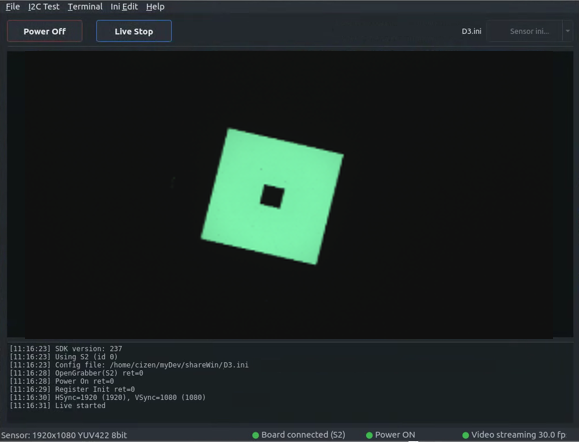
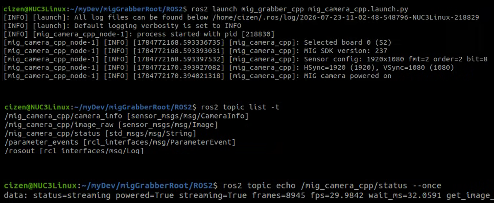

Linux & ROS2
The MIG Grabber SDK also runs on Linux, and a ROS2 package is provided so that the grabber can publish captured frames directly into a ROS2 graph.
Ubuntu 22.04 LTS
The MIG Grabber SDK operates on Ubuntu 22.04 LTS with the MIG-S2 board, using the same .ini module configuration files as on Windows.
Power on, register init, sync check, and live streaming work the same way as on Windows — the SDK reports the connected board, power state, and streaming frame rate.

[11:16:23] SDK version: 237
[11:16:23] Using S2 (id 0)
[11:16:23] Config file: /home/cizen/myDev/shareWin/D3.ini
[11:16:28] OpenGrabber(S2) ret=0
[11:16:28] Power On ret=0
[11:16:29] Register Init ret=0
[11:16:30] HSync=1920 (1920), VSync=1080 (1080)
[11:16:31] Live started
Downloads
| File | Target | Description |
|---|---|---|
cyusb_install.tar.xz |
Ubuntu 20.04 / 22.04 | CyUSB Suite for Linux — the USB driver layer (libcyusb, udev rules) used to reach the grabber board |
miglib_152_install_Ubuntu_20_.tar.xz |
Ubuntu 20.04 LTS | MIG Grabber shared library libmigGrabber.so.152 |
miglib_152_install_Ubuntu_22_.tar.xz |
Ubuntu 22.04 LTS | MIG Grabber shared library libmigGrabber.so.152 |
Both archives extract flat, with no wrapper directory, so unpack each into its own folder.
1. Install the CyUSB driver
mkdir cyusb_install && tar xf cyusb_install.tar.xz -C cyusb_install
cd cyusb_install
sudo ./install.sh
install.sh must be run as root, from the directory it was extracted into — it resolves configs/ and lib/ relative to the current directory. It:
- writes
configs/88-cyusb.rules, a udev rule matching the Cypress vendor ID04b4that sets the device node to mode666and calls/usr/local/bin/cy_renumerate.shon device add (A) and remove (R) - copies
configs/cyusb.confto/etc/and88-cyusb.rulesto/etc/udev/rules.d/ - deletes stale
libcyusb.so*from/usr/liband/usr/local/lib - installs
lib/libcyusb.so.1into/usr/local/liband symlinkslibcyusb.soto it - copies
cy_renumerate.shto/usr/local/binwith mode777
2. Install the MIG Grabber library
mkdir miglib_install && tar xf miglib_152_install_Ubuntu_22_.tar.xz -C miglib_install
cd miglib_install
sudo bash mig_install.sh
mig_install.sh carries no shebang and is not marked executable, so run it with bash. It:
- removes any existing
/usr/local/lib/libmigGrabber.so* - copies
libmigGrabber.so.152into/usr/local/lib - symlinks
/usr/local/lib/libmigGrabber.sotolibmigGrabber.so.152
On Ubuntu 20.04 LTS the steps are identical — use the miglib_152_install_Ubuntu_20_ archive instead.
ROS2
The mig_grabber_cpp package brings the grabber up as a ROS2 node (mig_camera_cpp) and publishes the captured images as sensor_msgs/msg/Image.
Launch the node:
ros2 launch mig_grabber_cpp mig_camera_cpp.launch.py

Published topics
| Topic | Type | Description |
|---|---|---|
/mig_camera_cpp/image_raw |
sensor_msgs/msg/Image |
Captured frames |
/mig_camera_cpp/camera_info |
sensor_msgs/msg/CameraInfo |
Camera information |
/mig_camera_cpp/status |
std_msgs/msg/String |
Board, power, and streaming status |
List the topics with their types:
ros2 topic list -t
Read the current status:
ros2 topic echo /mig_camera_cpp/status --once
data: status=streaming powered=True streaming=True frames=8945 fps=29.9842 wait_ms=32.0591